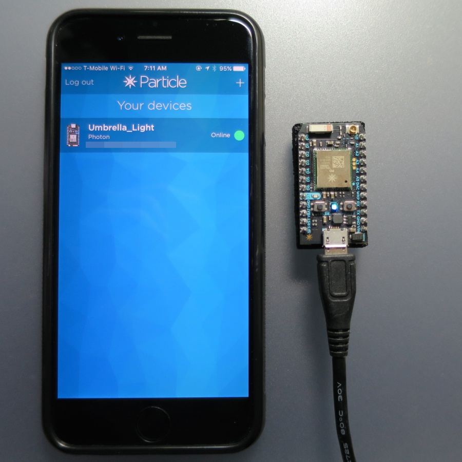
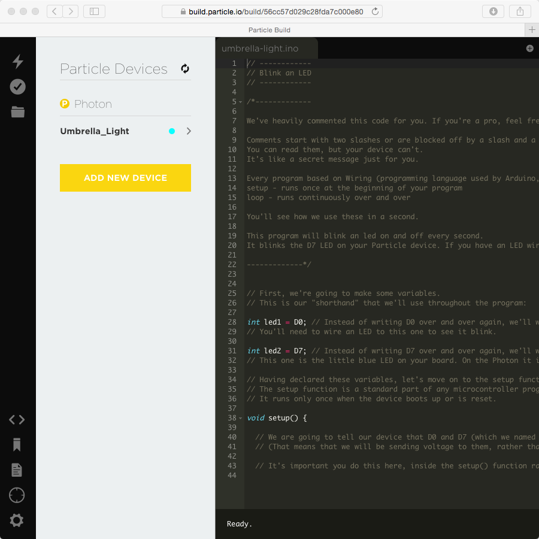
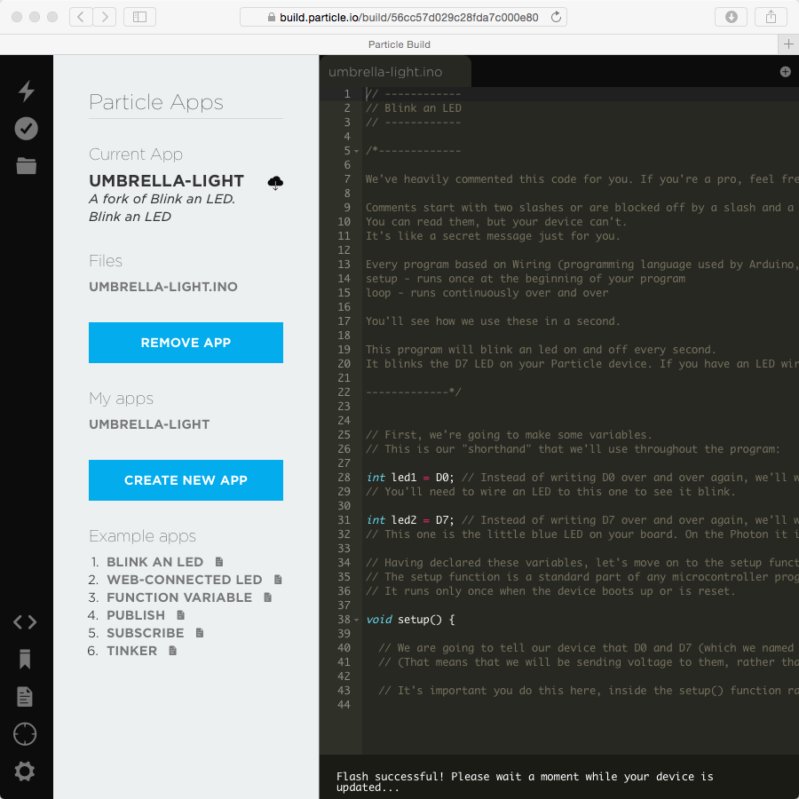
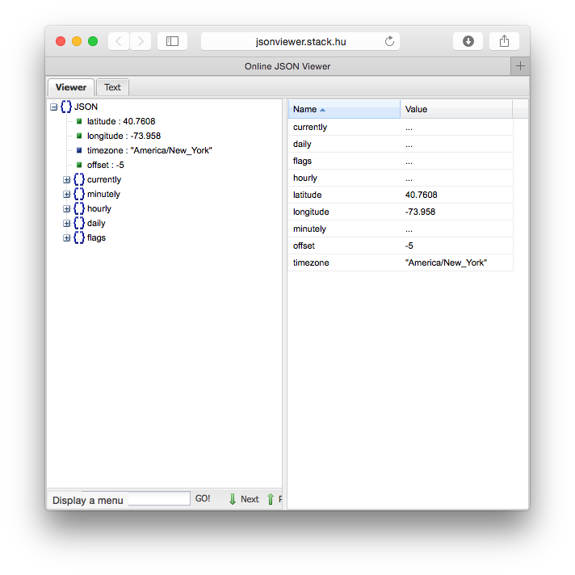
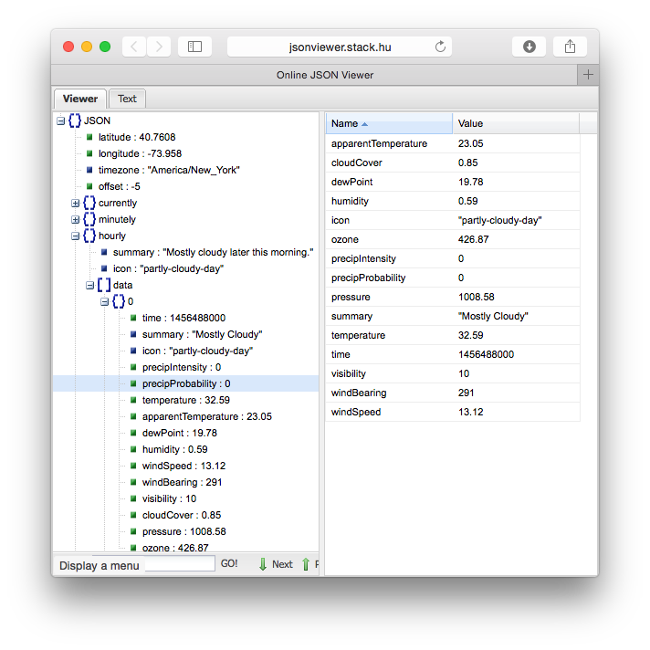
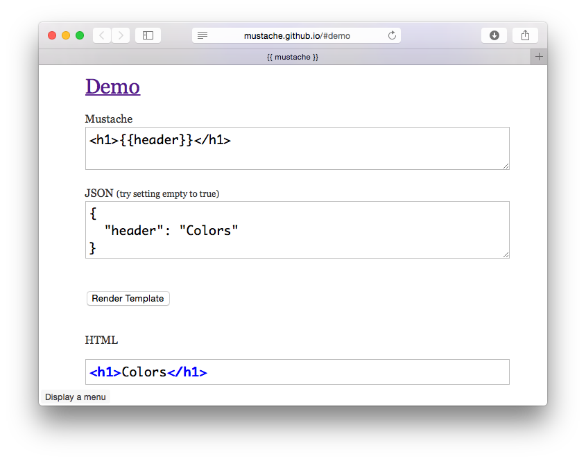
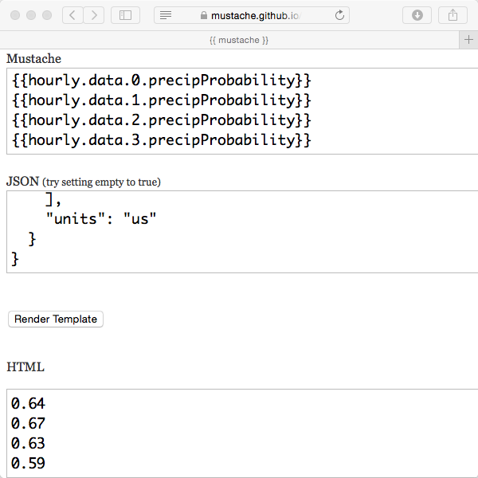
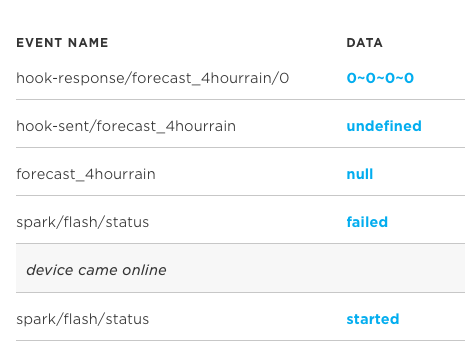
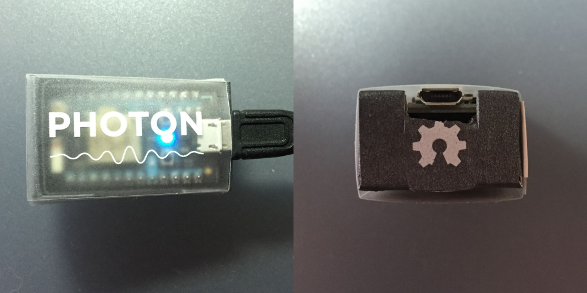

I live in NYC and the weather can change suddenly. It may look nice outside my window when I’m getting ready to leave, but a storm could be inbound. I’d like to have something that tells me to “bring your umbrella” right next to the door.
This is my first project done with the Particle Photon, and because I couldn’t find a comprehensive tutorial on this type of project, I wrote it up in tutorial form. The tutorial demonstrates polling for data from a third-party API using Webhooks, and requires no extra parts or assembly to get going.
I backed the initial Kickstarter campaign for the Spark Core back in 2013 but never made use of the Core as it didn’t have enough memory for the projects I was working on at the time. I kept watching for an announcement of a V2 Spark Core, and when the Photon was announced I preordered a few immediately. While it’s not needed for this project, the Photon has plenty of memory and a better WiFi chipset than the Core, and at $20 is a great value.
If you’re replicating this project, all you need to buy is a Photon. Hopefully you already have a computer, USB micro-B cable, and smartphone capable of running the Particle app to initially configure the Photon.
Getting Started - Blink an LED
Follow the Getting Started section of the Photon Guide to create a Particle.io account, connect the Photon to your WiFi network using the smartphone app, and give it a name (“Umbrella_Light”). I didn’t have any trouble setting up WiFi using the app, but some friends have had trouble using the app. There is a way to add the Photon to your account and connect it to your WiFi network using USB after installing the Particle CLI tool. CLI is needed later in this tutorial, so it you want to skip the Particle app and setup everything with CLI, you’re not wasting any time.

Next let’s go to Particle Build, the web IDE for Particle products that will let you write code, compile, and update your Photon all from a browser. If you’ve used the Arduino IDE before, Build is a similar concept, only everything is done in a browser and programming is done over WiFi not USB.
Start by opening the Devices tab, find “Umbrella_Light”, and make sure it’s online (circle breathing cyan next to the name. If you’re already a Particle user and there are multiple devices in your list, hover to the left of the name and click to show a yellow star. The device with a star will get flashed with new firmware when you use the Flash function.

Now go to the Code tab. Click on the Example app called “BLINK AN LED”, then the button at the top “USE THIS EXAMPLE”. Rename the app from “BLINK AN LED” to “UMBRELLA-LIGHT” by clicking on the name. Now click on each of the icons in the upper left from bottom to top: Save, Verify, Flash, looking at the status that shows up below the code before continuing to the next one.

Your Photon’s RGB LED should go through several changes as firmware is loading and it starts up. If this is your first time using the Photon, the base firmware may need to be updated which can take a minute or more. You might see blinking magenta, then blinking of other colors, but in the end the LED should show Breathing Cyan (connected). The Blue LED next to pin D7 should now be blinking on and off. Your first program is loaded and running!
Customizing the Firmware
LEDs
As I’m walking out my door, I want to know at a glance if there’s a chance of rain in the next four hours, so I can make a decision on if I should bring an umbrella. I figure there are four states that can easily be displayed on the Blue LED, and recognizable at a glance:
| State | Blue LED |
| Bring an umbrella | ON |
| Chance of rain | Short Pulse |
| No Rain | OFF |
| Can’t Connect | Flashing Fast |
This code added before setup() lets us try out the new LED states.
enum weatherState {
WEATHER_STATE_BRING_UMBRELLA,
WEATHER_STATE_CHANCE_OF_RAIN,
WEATHER_STATE_NO_RAIN,
WEATHER_STATE_CANT_CONNECT
};
// returns after 1 second
void controlWeatherLed(int state) {
switch (state) {
case WEATHER_STATE_BRING_UMBRELLA:
digitalWrite(led1, HIGH);
digitalWrite(led2, HIGH);
delay(1000);
break;
case WEATHER_STATE_CHANCE_OF_RAIN:
digitalWrite(led1, HIGH);
digitalWrite(led2, HIGH);
delay(200);
digitalWrite(led1, LOW);
digitalWrite(led2, LOW);
delay(800);
break;
case WEATHER_STATE_NO_RAIN:
digitalWrite(led1, LOW);
digitalWrite(led2, LOW);
delay(1000);
break;
case WEATHER_STATE_CANT_CONNECT:
default:
int i;
for(i=0; i<5; i++) {
digitalWrite(led1, HIGH);
digitalWrite(led2, HIGH);
delay(100);
digitalWrite(led1, LOW);
digitalWrite(led2, LOW);
delay(100);
}
break;
}
}
Replace the code in loop() with this snippet and loop will now cycle through the states, staying on each one for 5 seconds.
void loop() {
controlWeatherLed(WEATHER_STATE_BRING_UMBRELLA);
controlWeatherLed(WEATHER_STATE_BRING_UMBRELLA);
controlWeatherLed(WEATHER_STATE_BRING_UMBRELLA);
controlWeatherLed(WEATHER_STATE_BRING_UMBRELLA);
controlWeatherLed(WEATHER_STATE_BRING_UMBRELLA);
controlWeatherLed(WEATHER_STATE_CHANCE_OF_RAIN);
controlWeatherLed(WEATHER_STATE_CHANCE_OF_RAIN);
controlWeatherLed(WEATHER_STATE_CHANCE_OF_RAIN);
controlWeatherLed(WEATHER_STATE_CHANCE_OF_RAIN);
controlWeatherLed(WEATHER_STATE_CHANCE_OF_RAIN);
controlWeatherLed(WEATHER_STATE_CANT_CONNECT);
controlWeatherLed(WEATHER_STATE_CANT_CONNECT);
controlWeatherLed(WEATHER_STATE_CANT_CONNECT);
controlWeatherLed(WEATHER_STATE_CANT_CONNECT);
controlWeatherLed(WEATHER_STATE_CANT_CONNECT);
controlWeatherLed(WEATHER_STATE_NO_RAIN);
controlWeatherLed(WEATHER_STATE_NO_RAIN);
controlWeatherLed(WEATHER_STATE_NO_RAIN);
controlWeatherLed(WEATHER_STATE_NO_RAIN);
controlWeatherLed(WEATHER_STATE_NO_RAIN);
}
You can get the full file here:
Flash your Photon with the new program, and you’ll be able to see what the different states look like on the blue LED.
Webhooks Overview
Now we need to get data from a weather service. Particle has an integration with IFTTT that looks really easy to set up, but I know from previous experience that IFTTT isn’t well suited to deliver this information. You can set up a trigger on IFTTT to send the forecast at a specific time of day, but I want to see the latest forecast no matter when I look at the display, not just at one time during the day. We’ll need to connect to a weather API and poll it periodically to keep the Photon updated with the latest forecast.
Forecast.io is my favorite website to check the weather, and I use their Dark Sky iOS app. They have an open API, and a Google search turned up a Photon project that gets data from the Forecast.io API using Webhooks.
Webhooks are an important feature of the Particle Cloud that allow a simple embedded device to get data from or send data to a web API that may be too complex to interact with directly. Most microcontrollers aren’t powerful enough to connect directly over HTTPS, and the responses sent by most APIs are large and not easy to parse on a microcontroller. Webhooks take care of those issues by querying the server from the cloud, and relaying the response back in a simple format.
For example, a sample Forecast.io query I tried had over 23kB of data in the response that the Photon would have to store and parse through using complex code. All I really want is a few values from that data with the chance of precipitation, and a Webhook can filter the rest out.
Webhooks have been out of beta since March 2015, but unfortunately as of publishing this tutorial in February 2016, they have to be setup using the Particle CLI (command line interface), as there is not yet a web interface for creating and managing Webhooks. You’ll need to follow the instructions in Particle Docs to install the CLI, which requires installing Node.js (I used v5.7.0 Stable).
An important feature of Webhooks is responseTemplates, which give the option for the server to format the response so it contains just the data we are interested in, and to make the data easier to parse. There’s only minimal documentation on this feature, but I found helpful users on the forums posting what has worked for them, and one user-submitted tutorial. I’ll explain how to use responseTemplates later in this tutorial.
Getting Data from Forecast.io
Let’s get started by signing up for a free Forecast.io API account. Once you’re in, copy your APIKEY as you’ll need it later, and note that you shouldn’t share this with anyone, so don’t post it as part of a URL on a forum for example. Next, go to the API Docs, and scroll down to the first API call, “The Forecast Call”. From the URL on the first line of this section, you can build up a call that returns the forecast. First, substitute your APIKEY for the text APIKEY in the URL. Next, get your latitude and longitude. An easy way to do this is by putting your address into the location box on the main Forecast.io homepage or by using the “Current Location” button on that page. Your latitude and longitude are updated in your browsers URL, so copy those, and paste them into your API URL.
https://api.forecast.io/forecast/APIKEY/LATITUDE,LONGITUDE
Now you can paste your custom URL into a browser window and see what your Photon would receive using the simplest Webhook. That’s a lot of data! This data would come in 512 byte chunks, and it would be difficult to write code that is able to look for just the data we want across all those chunks. That’s where responseTemplates come in.
We need to tell the Webhook where to find the information we want, so lets figure that out ourselves. First let’s make the JSON response easier to read. Copy the whole response from your browser window, and paste it into the “text” window at this online JSON viewer. Press the “Format” button and it will add whitespace so you can see the structure easier. Go to the “viewer” tab and you can see the data organized nicely. You could go back to the API Docs and read up on what all these properties mean, but I found the names to be quite descriptive.

I’m interested in if it might rain from the time I leave home, to when I might return. I want this information at a glance, and we only have one LED, so I have to pick a single time range where I might be out. I’m going to choose four hours as I work from home and would usually be going out for an errand or quick meetup. With more LEDs, we could display several time ranges; that would be a good improvement for a future project.
The “hourly” data block seems like the best choice for finding info on chance of rain in the next four hours. We can look at precipProbability in hourly data blocks 0-3. Now to tell the Webhook to give us just this information.

ResponseHooks and Mustache Templates
The responseTemplate tells the Particle Cloud what data we want to receive, and the order and format we want to receive it in. It only works with JSON formatted responses, not XML like many APIs still use. It uses Mustache Templates, named for the curly braces that look like a bit like mustaches. Let’s use the demo on the Mustache site to first explain how they work, then make a template for our data.
The demo has three sections: Mustache (the template), JSON (the data to apply to the template), and HTML (the result of applying the JSON to the template). In the demo, the Mustache template is a mix of HTML tags (in angle brackets <>) and Mustache tags (in double curly braces {{}}).
The demo uses several features of Mustache templates, but the first line of the template is enough to demonstrate what we need for this project. Press the “Render HTML” button, and you can see that <h1>{{header}}</h1> causes the value of “header” in the JSON object to show up in the HTML result between the <h1></h1> tags.

When we’re done putting our data in the demo boxes, “Mustache” is what we will use for the responseTemplate, “JSON” will be coming from Forecast.io, and the “HTML” section (which in our case doesn’t use HTML at all) is what we will send to the Photon. Let’s come up with a template first.
Going back to the JSON viewer, the data we want is the value of precipProbability nested under “hourly”, “data”, and number 0-3. We need four Mustarche tags in our template to render that data in the result. Paste this into the “Mustache” section of the demo:
{{hourly.data.0.precipProbability}}
{{hourly.data.1.precipProbability}}
{{hourly.data.2.precipProbability}}
{{hourly.data.3.precipProbability}}
Now you can paste the Forecast.io JSON response for your custom API call into the demo’s JSON box. Press the “Render Template” button and you should see four probability values show up in the HTML box.

In case there’s no rain in your forecast, try getting the forecast for somewhere that’s currently seeing some rain. Drag the location pin on the Forecast.io weather globe to somewhere with some precipitation on the radar, make sure there’s rain in the forecast, then use the latitude/longitude from the browser URL to update your API URL. Here’s a sample you can use:
Now we need to make the response easy to parse. The line breaks between values make it easy for us to read, but we could replace those with a token character to makes the response both readable and easily parseable by code. Edit the template, deleting the line breaks and adding tilde ~ characters between each Mustache tag:
{{hourly.data.0.precipProbability}}~{{hourly.data.1.precipProbability}}~{{hourly.data.2.precipProbability}}~{{hourly.data.3.precipProbability}}
Now when you render, the result looks like:
0.64~0.67~0.63~0.59
Create Webhook
We’re now ready to build the Webhook. Open a command prompt, and make sure Particle CLI is working by typing particle. You need to login to your Particle account the first time using the CLI, particle login. Run the particle webhook create command without any more parameters in your terminal window, and it will return usage details including a JSON Template. Copy the template and paste into a text editor, then save as forecast_4hourrain.json.
Edit the template line by line:
event- give it a good name, likeforecast_4hourrainurl- this is the API url with your APIKEY and locationdeviceid- delete this line, we can use this Webhook with any of our devices- You can delete the “following parameters are optional line”, it’s just a comment
mydevices- set totrue, we don’t want someone else’s device accidentally using this Webhook and using up our limited API queriesrequestType- set to “GET”, we are using an HTML GET for the queryform- delete, we’re not submitting a formheaders- delete, we don’t have custom headersquery- delete, we aren’t including extra parameters in the URLjson- delete, we’re not including JSON with the requestauth- delete, the API doesn’t use authenticationresponseTemplate- paste the Mustache template in quotes replacingnullwith"{{hourly.data.0.precipProbability}}~{{hourly.data.1.precipProbability}}~{{hourly.data.2.precipProbability}}~{{hourly.data.3.precipProbability}}"rejectUnauthorized- delete, only needed to ignore a bad SSL certification- Make sure the last line (responseTemplate), doesn’t end with a comma, or the file won’t parse
Your template should look like this, but containing your unique URL:
{
"event": "forecast_4hourrain",
"url": "https://api.forecast.io/forecast/APIKEY/40.7608,-73.9580",
"_": "The following parameters are optional",
"mydevices": "true",
"requestType": "GET",
"responseTemplate": "{{hourly.data.0.precipProbability}}~{{hourly.data.1.precipProbability}}~{{hourly.data.2.precipProbability}}~{{hourly.data.3.precipProbability}}"
}
You can validate your JSON by pasting into JSONLint; I initially had an extra comma after the “responseTemplate” line, and JSONLint caught it. When you’re done, save, then use this command in a terminal window to create the Webhook on the Particle Cloud.
particle webhook create forecast_4hourrain.json
You should see something like “Successfully created webhook with ID ...”, and now we’re ready to update the firmware to read the Webhook.
Update Firmware to Handle Webhook
It’s easy to trigger the Webhook and have the Photon listen for a response. Add this code in setup():
if (Particle.subscribe("hook-response/forecast_4hourrain", gotForecast, MY_DEVICES)) {
Serial.println("subscribed!");
} else {
Serial.println("error: subscription failed");
}
Add this function, which will be called when the Webhook response is received, and for right now, will print what it receives to a terminal over USB:
void gotForecast(const char *event, const char *data) {
static int i = 0;
i++;
Serial.print(i);
Serial.print(event);
Serial.print(", data: ");
if (data)
Serial.println(data);
else
Serial.println("NULL");
}
Finally, add this code to loop() to trigger the Webhook:
// wait 10 seconds after reset before sending the first trigger
static unsigned long nextTrigger = 10 * 1000;
if (nextTrigger < millis()) {
// polling Webhook every 2 minutes is 720 API calls/day
nextTrigger = millis() + 2*60*1000;
Serial.println("Requesting Forecast");
Particle.publish("forecast_4hourrain");
}
Here’s the full file with all the above changes:
Before you flash your Photon with the new code, we need to get some debugging tools ready. First, we need a tool for seeing USB Serial traffic from the Photon. There are a lot of options, and you may already have a preferred serial terminal program. If you don’t, Particle CLI - which we already installed - includes a basic one. Type this into your terminal window:
particle serial monitor
You should see a response like Opening serial monitor for com port: "/dev/cu.usbmodem1413521", though it won’t actually open unless the Photon is running firmware that opens the Serial device. You’ll need to run that command again each time the Photon resets, and the Photon will reset each time you flash it with new firmware. This can get tiring if you are doing a lot of flashing, and there are programs out there that automatically reconnect after a disconnect (I personally use Serial for the Mac), but the CLI serial monitor is good enough for this project.
Next, it would be nice to have a way to see what’s going on in the Particle Cloud. The Particle Dashboard can show when the Cloud receives the publish event to start the Webhook, and Webhook request and response.
OK, with all our dev tools ready, let’s flash the firmware. Press the “flash” button in Particle Build, and watch your terminal window for the Photon to disconnect as it receives new firmware. You can use the particle serial monitor command immediately after it disconnects so the serial monitor is ready for the firmware to start. Switch over to Particle Dashboard in your browser.
If everything is working, you should see this in your serial monitor window:
Opening serial monitor for com port: "/dev/cu.usbmodem141331"
subscribed!
Requesting Forecast
1hook-response/forecast_4hourrain/0, data: 0~0~0~0
And you should see this in the Particle Dashboard:

Starting from the oldest message at the bottom, the first few messages are self explanatory, though you can ignore the /spark/flash/status - failed event as I’ve never seen a success event since starting with the Photon. Next, the Photon published an event named forecast_4hourrain, which triggers the Webhook request. The next event, hook-sent/forecast_4hourrain tells us that the Webhook was triggered and the Forecast.io Webhook was started. We don’t subscribe to this event on the Photon, so nothing happens there, but if we did, we could print out a message for debugging. The last event is hook-response/forecast_4hourrain, which contains the data coming from Forecast.io after applying the responseTemplate. We do subscribe to this event on the Photon, so it prints out 1hook-response/forecast_4hourrain/0, data: 0~0~0~0.
If you don’t see something similar, scroll down to the troubleshooting section at the end of the article, and make sure the Webhook is working properly before continuing on.
Control LED
OK, we have forecast data coming into the Photon, and a status LED, let’s get them working together. We want loop() to update the state of the display with the data from the forecast, then to call controlWeatherLed() with the latest state. Let’s start with the easy part, setting the state to WEATHER_STATE_BRING_UMBRELLA or WEATHER_STATE_CHANCE_OF_RAIN based on the Webhook response.
We’ll create a new variable called state. It needs to be declared outside of any function as it will be set by gotForecast(), and used inside loop().
// start off in WEATHER_STATE_CANT_CONNECT, this should update after the first Webhook response is received
int state = WEATHER_STATE_CANT_CONNECT;
In gotForecast(), we should parse the Webhook response instead of just printing it. The token characters we added between values in the response template are there so we can use the strtok() (Split string into tokens) function to parse the response. We want to know if there is a valid response from the API (are there any values?), if it’s going to rain (is probability is above the rain threshold?), or if there’s a chance it’s going to rain (is probability is below the rain threshold but above the chance threshold?). Add this to the end of gotForecast() to parse the response, looking for the largest probability value:
// strtok can't work with const data array, copy to editable array - length is 4x prob values (4*4 chars), three tokens + null
char dataString[4 * 4 + 3 + 1];
strncpy(dataString, data, sizeof(dataString));
// go through array, parse each probability value and find the largest
i = 0;
float largestProbability = -1.0;
char * pch = strtok(dataString, "~");
while (pch != NULL) {
float probability = atof(pch);
Serial.print("Chance of rain in hour ");
Serial.print(i);
Serial.print(": ");
Serial.println(probability);
if (probability > largestProbability)
largestProbability = probability;
pch = strtok(NULL, "~");
i++;
}
Now that we have the largest probability value from the response, it’s easy to set the state. First we need to define the thresholds (you can easily change these to your liking):
const float umbrellaThreshold = 0.50;
const float chanceofrainThreshold = 0.25;
Finally, at the end of gotForecast() we compare the thresholds to the largest probability:
if (largestProbability < 0) {
state = WEATHER_STATE_CANT_CONNECT;
Serial.println("Response didn't contain valid data - WEATHER_STATE_CANT_CONNECT");
} else if (largestProbability >= umbrellaThreshold) {
state = WEATHER_STATE_BRING_UMBRELLA;
Serial.println("Bring an umbrella! - WEATHER_STATE_BRING_UMBRELLA");
} else if (largestProbability >= chanceofrainThreshold) {
state = WEATHER_STATE_CHANCE_OF_RAIN;
Serial.println("It might rain! - WEATHER_STATE_CHANCE_OF_RAIN");
} else {
state = WEATHER_STATE_NO_RAIN;
Serial.println("Doesn't look like rain - WEATHER_STATE_NO_RAIN");
}
Going back to loop(), we can replace our demo calls to controlWeatherLed() with one real call using the state variable:
controlWeatherLed(state);
Here’s the full file with all the above changes:
Flash your Photon, and after receiving the response, it should print out the chance of rain for the next four hours and the state over Serial, and drive the blue LED accordingly.
subscribed!
Requesting Forecast
1hook-response/forecast_4hourrain/0, data: 0~0~0~0
Chance of rain in hour 0: 0.00
Chance of rain in hour 1: 0.00
Chance of rain in hour 2: 0.00
Chance of rain in hour 3: 0.00
Doesn't look like rain - WEATHER_STATE_NO_RAIN
Robustness
So, we have a LED that tells us the chance of rain, updating every two minutes, and will tell us if there’s a problem, right? Not quite. The state only updates if we get a response from the Webhook, and with a connectivity problem or Webhook problem, we may never get a response. Let’s set a timeout after making the Webhook request, and make sure there’s a response received before the timeout.
We create a new global timeout variable, as it needs to be accessed by both loop() and gotForecast().
// keep track of when we expect a response from the Webhook
unsigned long nextTimeout;
Set the timeout in loop() right after publishing the Webhook request:
// We expect a response within 30 seconds
nextTimeout = millis() + 30 * 1000;
Look for an expired timeout in loop(), right before calling controlWeatherLed():
if (nextTimeout < millis()) {
// we waited too long for a response, set to error state and set timeout to far off future
state = WEATHER_STATE_CANT_CONNECT;
nextTimeout = ULONG_MAX;
Serial.println("Response timeout - WEATHER_STATE_CANT_CONNECT");
}
And finally, disable the timeout when we get a Webhook response in gotForecast():
// we got our response, set timeout to the far off future
nextTimeout = ULONG_MAX;
Now our program is complete. Flash your Photon with the final code:
Testing
We’re done, right? Let’s find out by doing some quick tests. It’s not easy to test with realtime data for your location as the weather doesn’t usually change that quickly and we’re looking at a four-hour window. Instead, let’s change the Webhook.
An easy test is to see what happens when the Webhook call fails. Delete the Webhook using these commands:
particle webhook list- use to get the Hook ID offorecast_4hourrainparticle webhook delete HOOKID- replaceHOOKIDwith your actual 24-digit ID
Now, wait the two minutes for the next Webhook request plus 30 seconds for the timeout, and you should see the state change to WEATHER_STATE_CANT_CONNECT.
While you’re waiting, make three copies of your forecast_4hourrain.json file, call them forecast_4hourrain_umbrella.json, forecast_4hourrain_chancerain.json, forecast_4hourrain_norain.json. Go to forecast.io and move the pin around on the globe to find areas that are currently raining, have a chance of rain, and have no rain in the next four hours. One of these is redundant as your home already falls into one of these categories. For each that you still need to test, create an API URL for the location, verify the precipitationProbability for the next 4 hours using your browser to do the request and jsonviewer to view the data, and paste the API URL into your JSON file. It can be difficult to find a location with just a chance of rain, it took me about ten tries looking at the API response for locations that looked promising on the map (zoomed in to the Regional level and on the edges of storms) before finding a location that had a chance of precipitation, but was < 50%.
Let’s finish up the WEATHER_STATE_CANT_CONNECT test, did you see the state change in both the terminal and see a fast flashing LED? Great!
To test the other conditions, one by one, delete the previous Webhook (particle webhook list to get the HOOK_ID, then particle webhook delete HOOK_ID), create the new one using your modified JSON file (particle webhook create FILENAME.json), and wait to see the results on your Photon. It’s going to be faster to reset your Photon each time and wait ten seconds for the request than to wait up to two minutes for the firmware to request on its normal schedule. Finally, delete the test Webhook and load the normal Webhook for your location.
Did you see the LED turn on for the location with rain, LED showing a short pulse for the location with a chance of rain, and LED turn off for the location with no rain? Great, now we’re confident that everything is working properly, and you can start using your new umbrella reminder display!
Next Steps
Customizing the Data
Maybe you have different thresholds for when you want to see “chance” of rain, or you want to change the display to show the next eight hours. You should be able to easily modify the code and Webhook to show you what you want to see.
Maybe you’re more interested in seeing the current or forecasted temperature? There’s a lot more data in the Forecast.io API response that could be used instead.
Mounting and Enclosures
You can mount the Photon where you want to see the information, maybe near the front door, where you keep your umbrella, where you get dressed in the morning, or anywhere else you’re likely to glance at when you’re getting ready to go out.
The little matchbox case the Photon comes in can be used for a makeshift enclosure as the LEDs shine through the translucent material. It’s flexible enough to allow the USB cable to remain attached for power. With a little cutout in the cardboard made with a hobby knife, it fits even better.

Maybe the Photon enclosure is a little too rough, you could make your own. A picture frame with thin white paper or a translucent material could be a good start.
Customizing the Electronics
Is the built-in LED not bright enough, or do you want to display more information? It’s easy to add a brighter external LED, the code already drives pin D0 like in the Photon Blink an LED example. You could use a NeoPixel Ring Kit (requires a bit of easy soldering), or the Internet Button to add more LEDs, and modify the firmware to drive the ring instead of just the onboard LED. With a ring, you could display the chance of rain for each hour separately, or other information.
Troubleshooting
Are you seeing "~~~" with no values instead of "0~0~0~0"? The Webhook subscription failed, double check the info in your Webhook .json file, specifically the API URL in your Webhook. Make sure you can use the URL to get a response with data back from the Forecast.io API.
Having other issues? Let me know, or post a question on the Particle Community.
Conclusion
This tutorial gave you an overview of how to get started with the Photon, poll for information from an API, and display it locally. If you followed along, maybe you built your first connected display project! I hope it gave you some good experience and confidence to do another project, or make your own!
Make sure to subscribe to the Connected Displays email list to find out when our next tutorial is posted.